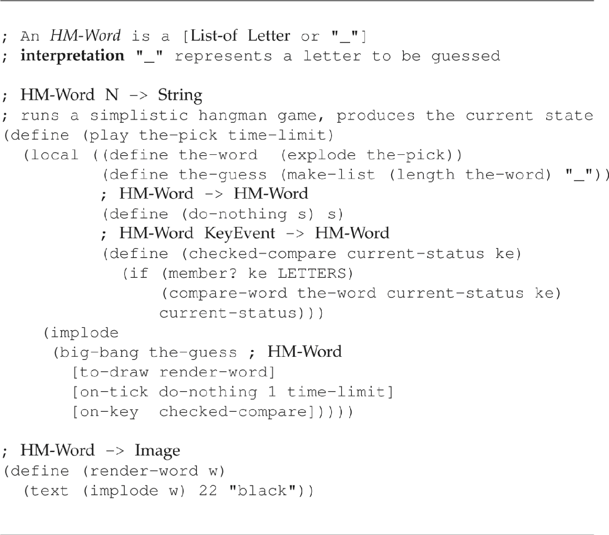

23.6 Finger Exercises: Two Inputs
Exercise 393. Figure 62 presents two data definitions for finite sets. Design the union function for the representation of finite sets of your choice. It consumes two sets and produces one that contains the elements of both.
Design intersect for the same set representation. It consumes two sets and produces the set of exactly those elements that occur in both. 
Exercise 394. Design merge. The function consumes two lists of numbers, sorted in ascending order. It produces a single sorted list of numbers that contains all the numbers on both inputs lists. A number occurs in the output as many times as it occurs on the two input lists together.
Exercise 395. Design take. It consumes a list l and a natural number n. It produces the first n items from l or all of l if it is too short.
Design drop. It consumes a list l and a natural number n. Its result is l with the first n items removed or just ’() if l is too short.
Exercise 396. Hangman is a well-known guessing game. One player picks a word, the other player gets told how many letters the word contains. The latter picks a letter and asks the first player whether and where this letter occurs in the chosen word. The game is over after an agreed-upon time or number of rounds.
Figure 136 presents the essence of a time-limited version of the game. See chapter 16.3 for why checked-compare is defined locally.

Figure 136: A simple hangman game
The goal of this exercise is to design compare-word, the central function. It consumes the word to be guessed, a word s that represents how much/little the guessing player has discovered, and the current guess. The function produces s with all "_" where the guess revealed a letter.
Once you have designed the function, run the program like this:
(define LOCATION "/usr/share/dict/words") ; on OS X
(define AS-LIST (read-lines LOCATION))
(define SIZE (length AS-LIST))
(play (list-ref AS-LIST (random SIZE)) 10)
See figure 74 for an explanation. Enjoy and refine as desired!
Exercise 397. In a factory, employees punch time cards as they arrive in the morning and leave in the evening. Electronic time cards contain an employee number and record the number of hours worked per week. Employee records always contain the name of the employee, an employee number, and a pay rate.
Design wages*.v3. The function consumes a list of employee records and a list of time-card records. It produces a list of wage records, which contain the name and weekly wage of an employee. The function signals an error if it cannot find an employee record for a time card or vice versa.
Assumption There is at most one time card per employee number.
Exercise 398. A linear combination is the sum of many linear terms, that is, products of variables and numbers. The latter are called coefficients in this context. Here are some examples:
In all examples, the coefficient of x is 5, that of y is 17, and the one for z is 3.
If we are given values for variables, we can determine the value of a polynomial. For example, if x = 10, the value of 5 · x is 50; if x = 10 and y = 1, the value of 5 · x + 17 · y is 67; and if x = 10, y = 1, and z = 2, the value of 5 · x + 17 · y + 3 · z is 73.
There are many different representations of linear combinations. We could, for example, represent them with functions. An alternative representation is a list of its coefficients. The above combinations would be represented as:
(list 5)
(list 5 17)
(list 5 17 3)
This choice of representation assumes a fixed order of variables.
Design value. The function consumes two equally long lists: a linear combination and a list of variable values. It produces the value of the combination for these values.
Exercise 399. Louise, Jane, Laura, Dana, and Mary decide to run a lottery that assigns one gift recipient to each of them. Since Jane is a developer, they ask her to write a program that performs this task in an impartial manner. Of course, the program must not assign any of the sisters to herself.
Here is the core of Jane’s program:
; [List-of String] -> [List-of String]
; picks a random non-identity arrangement of names
(define (gift-pick names)
(random-pick
(non-same names (arrangements names))))
; [List-of String] -> [List-of [List-of String]]
; returns all possible permutations of names
; see exercise 213
(define (arrangements names)
…)
It consumes a list of names and randomly picks one of those permutations that do not agree with the original list at any place.
Your task is to design two auxiliary functions:
; [NEList-of X] -> X
; returns a random item from the list
(define (random-pick l)
(first l))
; [List-of String] [List-of [List-of String]]
; ->
; [List-of [List-of String]]
; produces the list of those lists in ll that do
; not agree with names at any place
(define (non-same names ll)
ll)
Recall that random picks a random number; see exercise 99.
Exercise 400. Design the function DNAprefix. The function takes two arguments, both lists of 'a, 'c, 'g, and 't, symbols that occur in DNA descriptions. The first list is called a pattern, the second one a search string. The function returns #true if the pattern is identical to the initial part of the search string; otherwise it returns #false.
Also design DNAdelta. This function is like DNAprefix but returns the first item in the search string beyond the pattern. If the lists are identical and there is no DNA letter beyond the pattern, the function signals an error. If the pattern does not match the beginning of the search string, it returns #false. The function must not traverse either of the lists more than once.
Can DNAprefix or DNAdelta be simplified?
Exercise 401. Design sexp=?, a function that determines whether two S-expressions are equal. For convenience, here is the data definition in condensed form:
; An S-expr (S-expression) is one of:
; -- Atom
; -- [List-of S-expr]
;
; An Atom is one of:
; -- Number
; -- String
; -- Symbol
Whenever you use check-expect, it uses a function like sexp=? to check whether the two arbitrary values are equal. If not, the check fails and check-expect reports it as such.
Exercise 402. Reread exercise 354. Explain the reasoning behind our hint to think of the given expression as an atomic value at first.